Extended Bayesian Visualization: Diagnostics Beyond Trace Plots
bayesvis
2026-04-05
Source:vignettes/bayesvis.Rmd
bayesvis.RmdOverview
The bayesvis package extends bayesplot with a set of diagnostic visualizations that go beyond the familiar trace plot. This vignette walks through each function using simulated MCMC draws with known properties—some well-behaved, some deliberately pathological—so you can see exactly what signal each plot is designed to surface.
# Load bayesplot first so bayesvis functions take precedence in the search path
library(bayesplot)
#> This is bayesplot version 1.15.0
#> - Online documentation and vignettes at mc-stan.org/bayesplot
#> - bayesplot theme set to bayesplot::theme_default()
#> * Does _not_ affect other ggplot2 plots
#> * See ?bayesplot_theme_set for details on theme setting
library(bayesvis)
#>
#> Attaching package: 'bayesvis'
#> The following object is masked from 'package:bayesplot':
#>
#> mcmc_rank_ecdf
# Use a muted color scheme throughout
color_scheme_set("blue")Simulated MCMC draws
All examples use the following synthetic data so you can reproduce every figure without a Stan model.
n_iter <- 1000L # MCMC iterations per chain
n_chains <- 4L # number of chains
n_obs <- 80L # observations
# ── Posterior draws ──────────────────────────────────────────────────────────
# Six parameters, varying degrees of identifiability.
# beta[1]–beta[3]: well identified (posterior SD << prior SD of 1)
# beta[4]–beta[6]: weakly identified (posterior SD ≈ prior SD of 1)
posterior_2d <- matrix(
c(
rnorm(n_iter, mean = 1.5, sd = 0.12), # beta[1]
rnorm(n_iter, mean = -0.8, sd = 0.18), # beta[2]
rnorm(n_iter, mean = 2.1, sd = 0.22), # beta[3]
rnorm(n_iter, mean = 0.1, sd = 0.94), # beta[4]
rnorm(n_iter, mean = -0.2, sd = 0.98), # beta[5]
rnorm(n_iter, mean = 0.3, sd = 0.91) # beta[6]
),
ncol = 6L
)
colnames(posterior_2d) <- paste0("beta[", 1:6, "]")
prior_sd <- rep(1, 6)
# ── Well-mixing 3D array ─────────────────────────────────────────────────────
# Four chains, two parameters: draws are i.i.d. so mixing is perfect.
good_array <- array(
rnorm(n_iter * n_chains * 2),
dim = c(n_iter, n_chains, 2L),
dimnames = list(NULL, paste0("chain:", 1:4), c("mu", "sigma"))
)
# ── Badly-mixing 3D array ────────────────────────────────────────────────────
# Chain 1 for "mu" is stuck in a completely different region.
bad_array <- good_array
bad_array[, 1, 1] <- rnorm(n_iter, mean = 8, sd = 0.15)
# ── Observed data and posterior predictive draws ─────────────────────────────
y_true <- 2
y <- rnorm(n_obs, mean = y_true, sd = 1)
# Well-calibrated model: yrep drawn from the same distribution as y
yrep_good <- matrix(rnorm(500L * n_obs, mean = y_true, sd = 1), nrow = 500L)
# Over-confident model: posterior predictive intervals too narrow
yrep_narrow <- matrix(rnorm(500L * n_obs, mean = y_true, sd = 0.25), nrow = 500L)
# ── LOO-PIT values ────────────────────────────────────────────────────────────
# Well-calibrated ≈ Uniform(0,1)
pit_good <- runif(n_obs)
# Over-dispersed: PIT concentrated near 0 and 1
pit_over <- rbeta(n_obs, shape1 = 0.35, shape2 = 0.35)
# Under-dispersed: PIT concentrated near 0.5
pit_under <- rbeta(n_obs, shape1 = 5, shape2 = 5)1. mcmc_shrinkage() — Prior-to-posterior shrinkage
Statistical motivation
The shrinkage factor measures how much the posterior has contracted relative to the prior.
- : the data are highly informative for (posterior much tighter than prior).
- : the posterior barely updated from the prior (weakly identified parameter).
Plotting against the posterior z-score reveals the signal-to-noise ratio of each parameter simultaneously.
Good example — high and low shrinkage
mcmc_shrinkage(posterior_2d, prior_sd = prior_sd)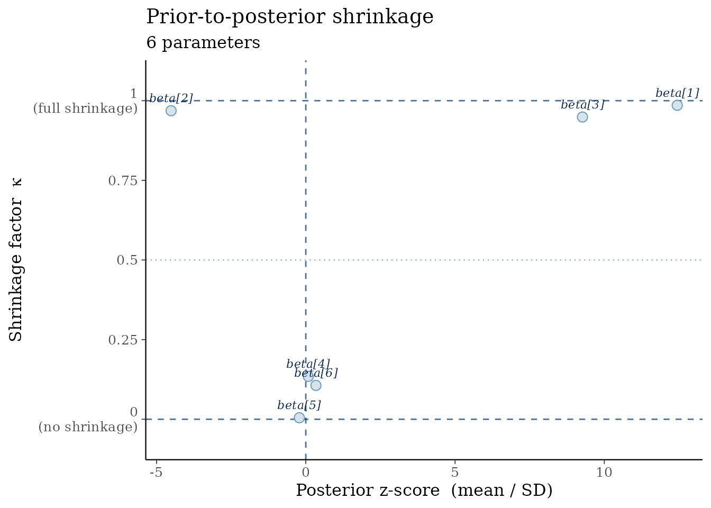
Parameters beta[1]–beta[3] cluster near
:
the data drive the posterior far from the prior. Parameters
beta[4]–beta[6] sit near
:
the posterior is essentially the prior, signalling weak
identifiability.
Using prior draws instead of closed-form prior SDs
When the prior is non-standard or specified implicitly, pass prior draws:
prior_draws <- matrix(rnorm(n_iter * 6, sd = 1), ncol = 6)
colnames(prior_draws) <- colnames(posterior_2d)
mcmc_shrinkage(posterior_2d, prior_draws = prior_draws)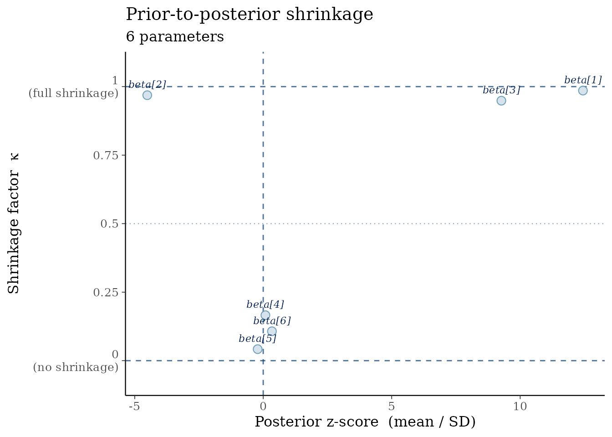
Computing shrinkage programmatically
kappa <- compute_shrinkage(posterior_2d, prior_sd = prior_sd)
round(kappa, 3)
#> beta[1] beta[2] beta[3] beta[4] beta[5] beta[6]
#> 0.986 0.968 0.949 0.135 0.005 0.1062. ppc_pit_hist() — LOO-PIT histogram
Statistical motivation
The probability integral transform (PIT) applied to leave-one-out predictive distributions produces values that should be for a well-calibrated model (Vehtari et al. 2017). Systematic deviations point to:
- U-shaped histogram → over-dispersed predictive distribution (model underestimates uncertainty).
- Hump-shaped histogram → under-dispersed predictive distribution (model overestimates certainty).
The shaded band is the binomial confidence region around the expected uniform density.
Well-calibrated model
ppc_pit_hist(pit_good)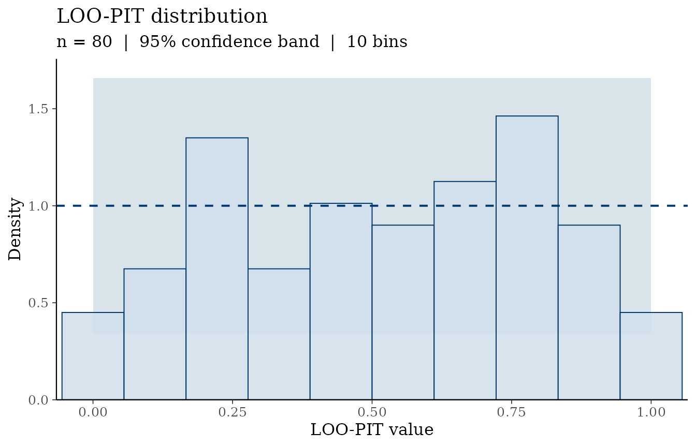
Bars are scattered around the reference line and mostly within the band.
Over-dispersed model
ppc_pit_hist(pit_over, bins = 12L)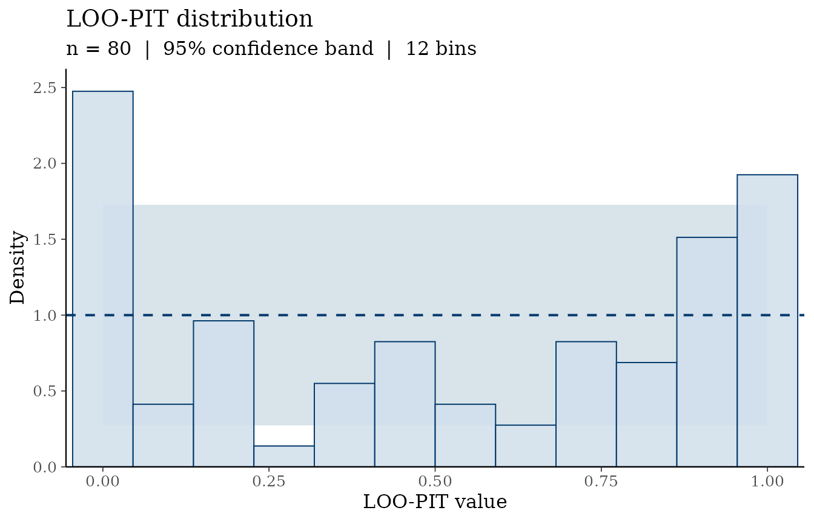
The U-shape reveals that observed values tend to lie in the tails of the predictive distribution — the model’s intervals are too wide.
Under-dispersed model
ppc_pit_hist(pit_under, bins = 12L)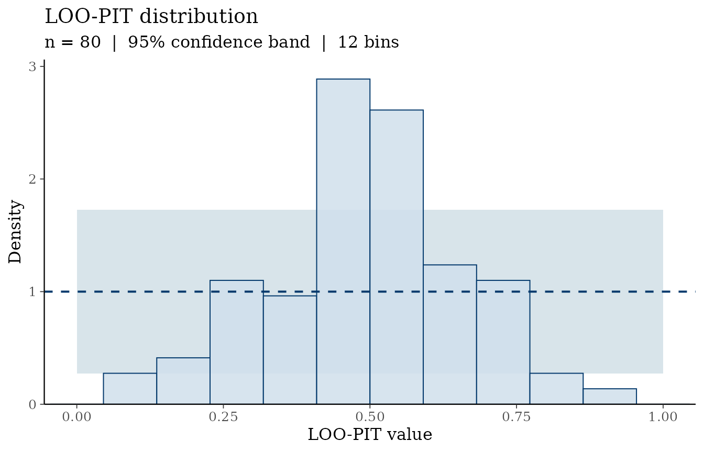
The central hump reveals over-confidence: observations cluster near the center of the predictive distribution.
3. ppc_pit_qq() — LOO-PIT Q-Q plot
The Q-Q version is more sensitive than the histogram for detecting subtle calibration failures, especially in the tails.
ppc_pit_qq(pit_good)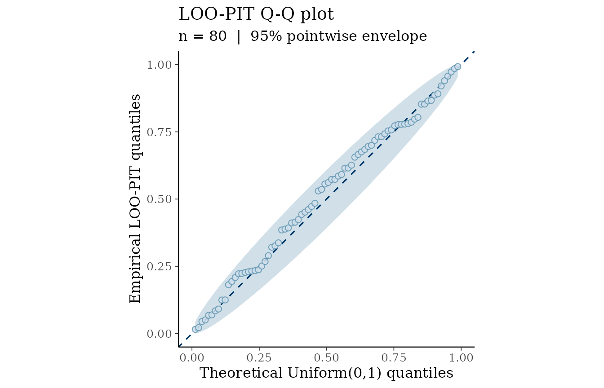
ppc_pit_qq(pit_over)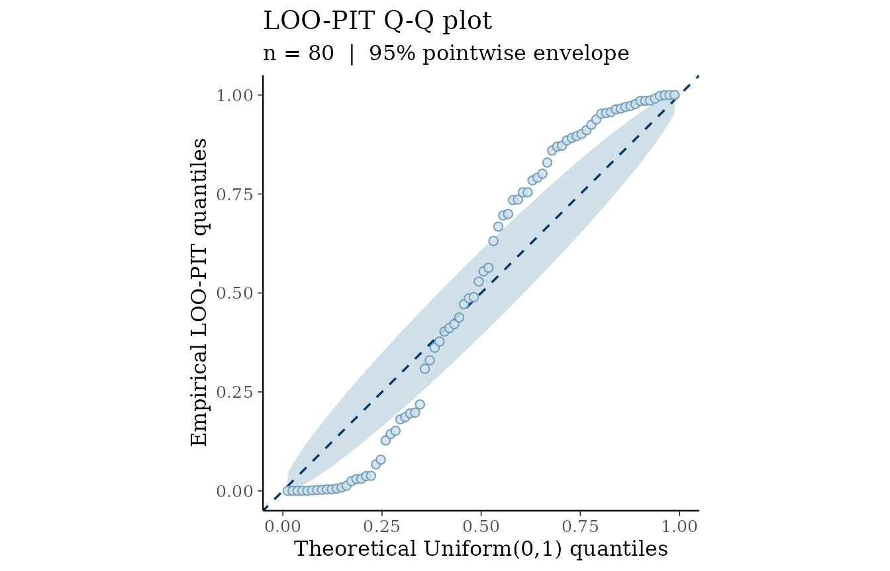
The S-shaped curve for the over-dispersed case (points dip below the diagonal at low quantiles and rise above at high quantiles) is a classic signature of U-shaped PIT distributions.
4. mcmc_rank_ecdf() — Rank ECDF per chain
Statistical motivation
Vehtari et al. (2021) propose diagnosing MCMC mixing via rank statistics: pool all draws across chains, rank them, and examine whether the ranks are uniformly distributed within each chain. Under ideal mixing, each chain’s ECDF of ranks should track the diagonal.
mcmc_rank_ecdf() plots the per-chain ECDFs with a
simultaneous confidence band based on the DKW inequality:
where
is the number of iterations per chain and
.
Well-mixing chains
mcmc_rank_ecdf(good_array, prob = 0.99)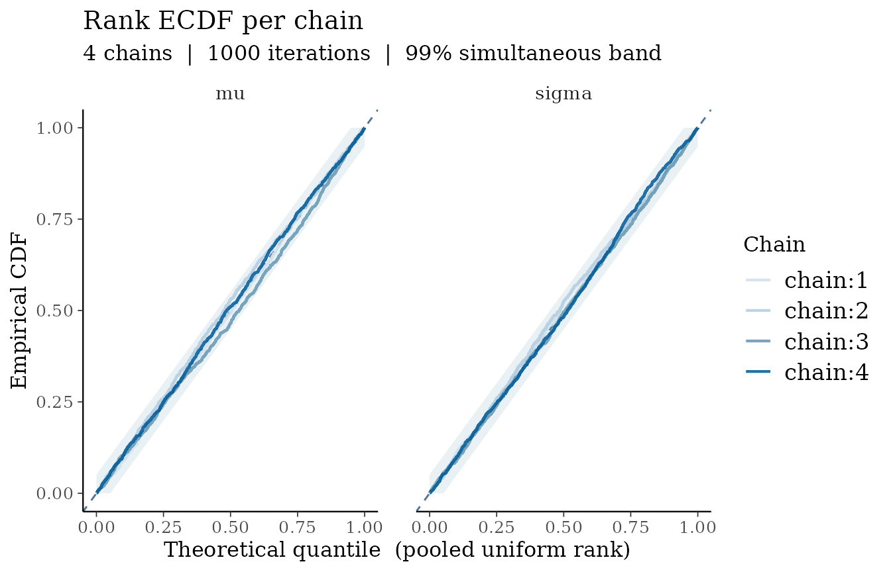
All four chain ECDFs overlap and stay within the grey band — textbook mixing.
Badly mixing chains (chain 1 stuck)
mcmc_rank_ecdf(bad_array, prob = 0.99)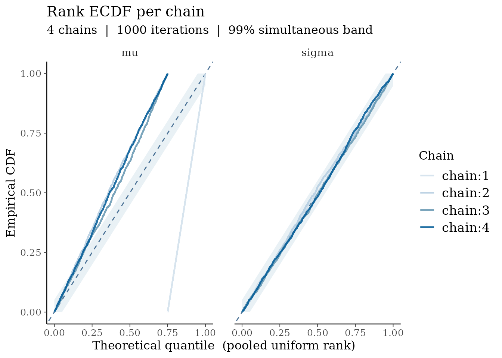
For mu, chain 1 (blue) rockets to 1 immediately because
all of its draws have the highest ranks (it was stuck at
while other chains were near 0). The other chains’ ECDFs are pushed
below the diagonal to compensate. This is impossible to miss, even
without a trace plot.
Selecting individual parameters
mcmc_rank_ecdf(bad_array, pars = "sigma")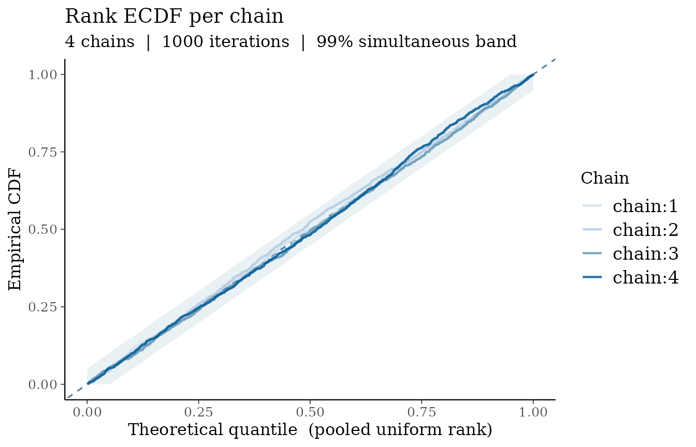
sigma is well-mixing — the problem is isolated to
mu, which mcmc_rank_ecdf() makes immediately
apparent.
5. ppc_coverage() — Posterior predictive coverage
Statistical motivation
A
posterior predictive interval should cover approximately
of observations (Gabry et al. 2019). ppc_coverage() makes
this concrete by drawing the credible interval for every observation and
coloring it by whether the observed value falls inside.
- Empirical coverage ≈ nominal: model is well-calibrated.
- Empirical coverage < nominal: model is over-confident.
- Empirical coverage > nominal: model is conservative.
Well-calibrated model (≈ 90% coverage expected)
ppc_coverage(y, yrep_good, prob = 0.90)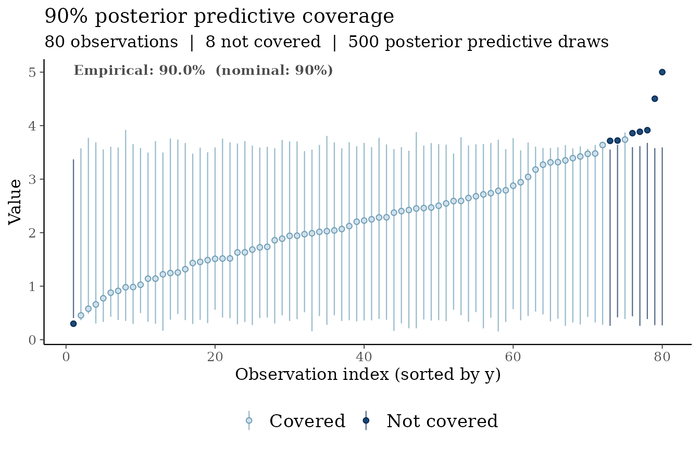
The annotated empirical rate should be close to 90%.
Over-confident model (intervals too narrow)
ppc_coverage(y, yrep_narrow, prob = 0.90)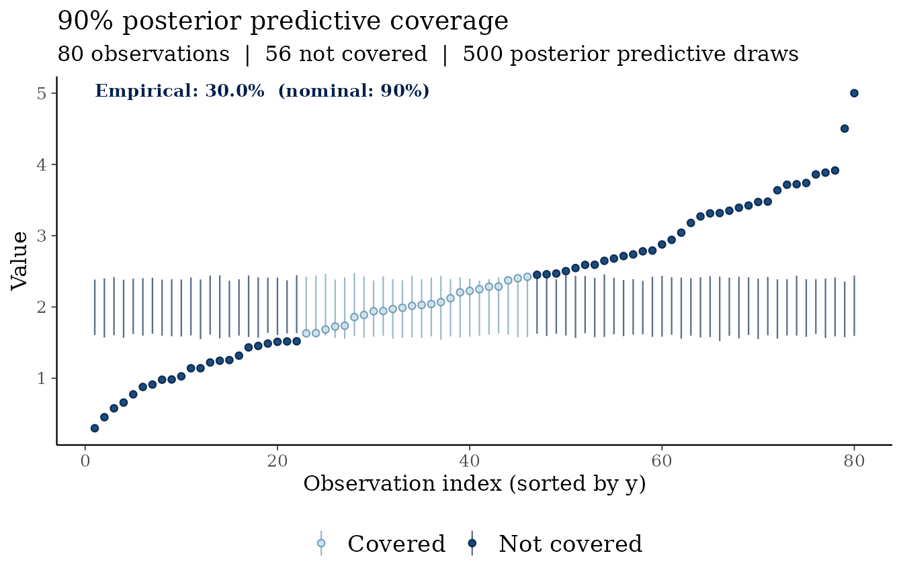
The majority of observations are not covered (red/dark), and the annotated empirical rate is far below 90%, signalling that the posterior predictive distribution is too narrow.
Sorting options
ppc_coverage(y, yrep_good, sort_by = "mean")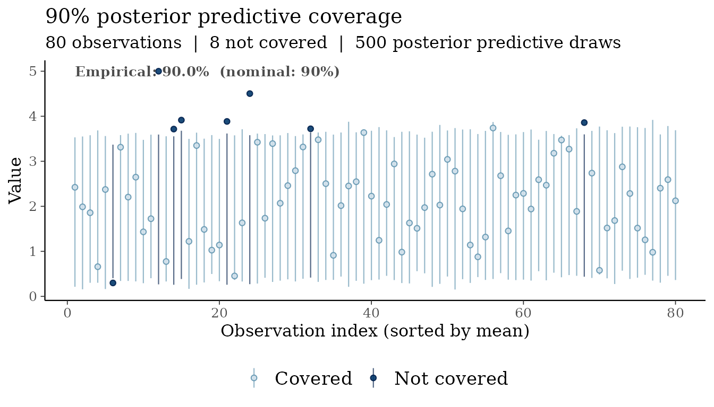
Sorting by posterior predictive mean can reveal whether miscoverage is systematic across the range of predicted values.
Combining with bayesplot color schemes
All bayesvis plots respect
bayesplot::color_scheme_set():
color_scheme_set("red")
ppc_pit_hist(pit_under)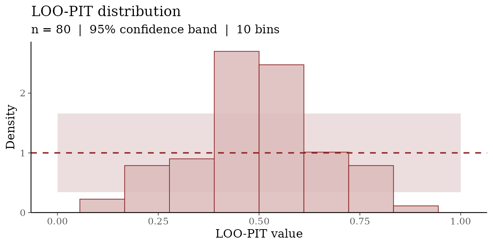
References
Gabry, J., Simpson, D., Vehtari, A., Betancourt, M., and Gelman, A. (2019). Visualization in Bayesian workflow. Journal of the Royal Statistical Society Series A, 182(2), 389–402. https://doi.org/10.1111/rssa.12378
Piironen, J. and Vehtari, A. (2017). Comparison of Bayesian predictive methods for model selection. Statistics and Computing, 27(3), 711–735. https://doi.org/10.1007/s11222-016-9649-y
Vehtari, A., Gelman, A., and Gabry, J. (2017). Practical Bayesian model evaluation using leave-one-out cross-validation and WAIC. Statistics and Computing, 27(5), 1413–1432. https://doi.org/10.1007/s11222-016-9696-4
Vehtari, A., Gelman, A., Simpson, D., Carpenter, B., and Bürkner, P.-C. (2021). Rank-normalization, folding, and localization: An improved R-hat for assessing convergence of MCMC (with discussion). Bayesian Analysis, 16(2), 667–718. https://doi.org/10.1214/20-BA1221